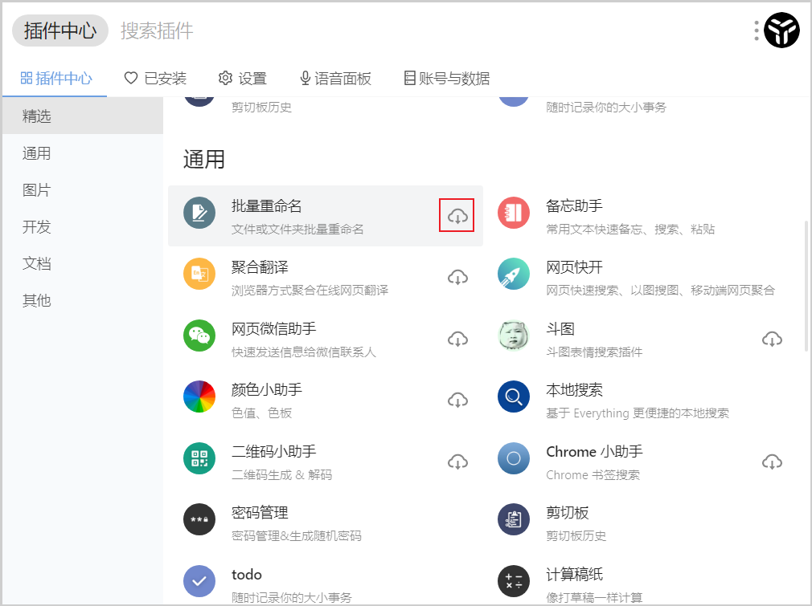
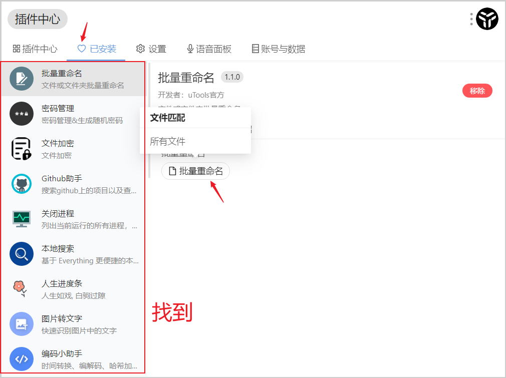
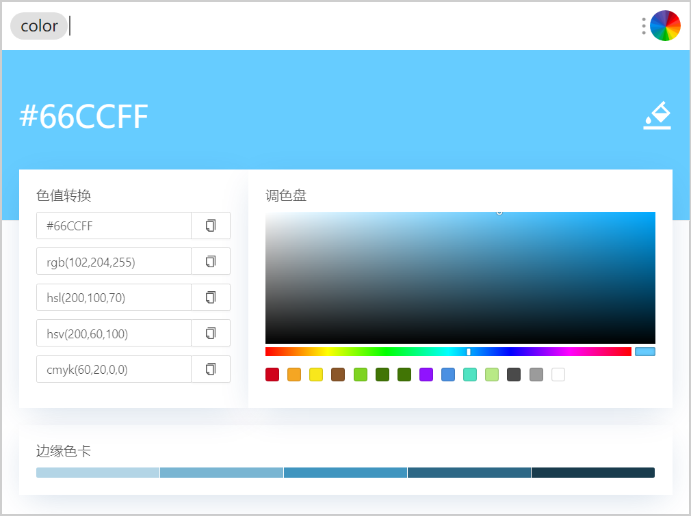
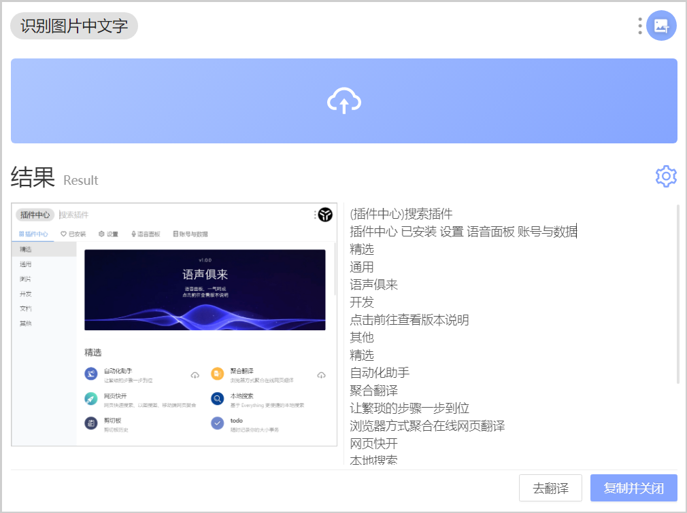
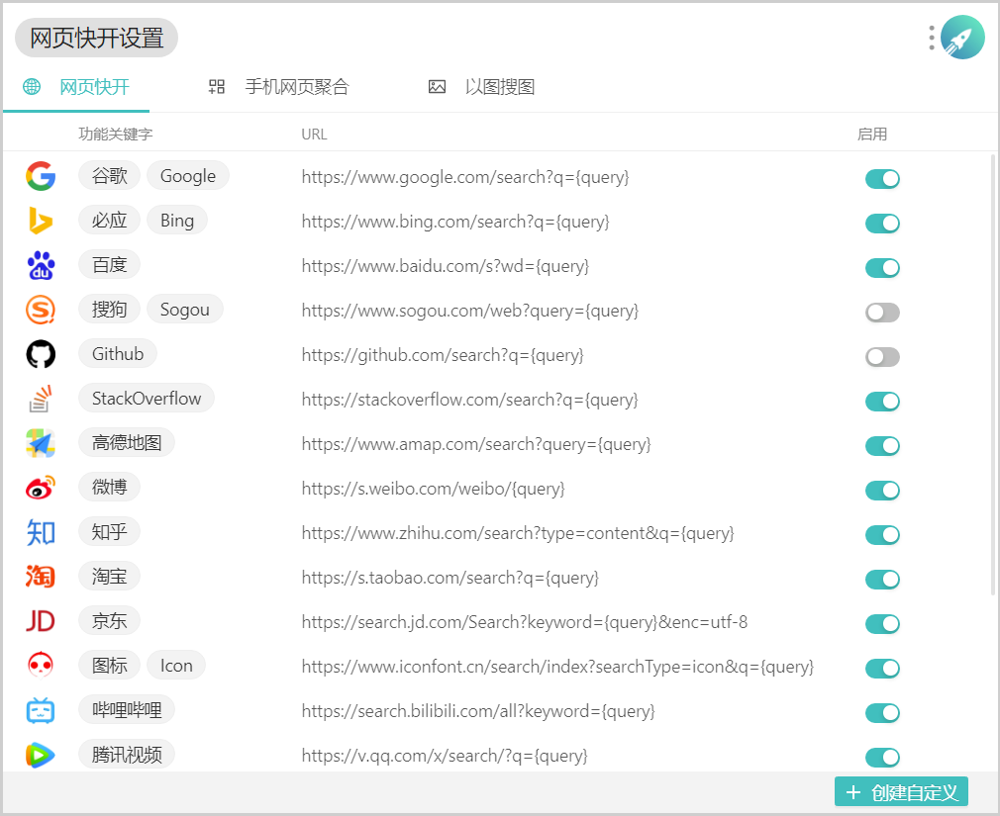
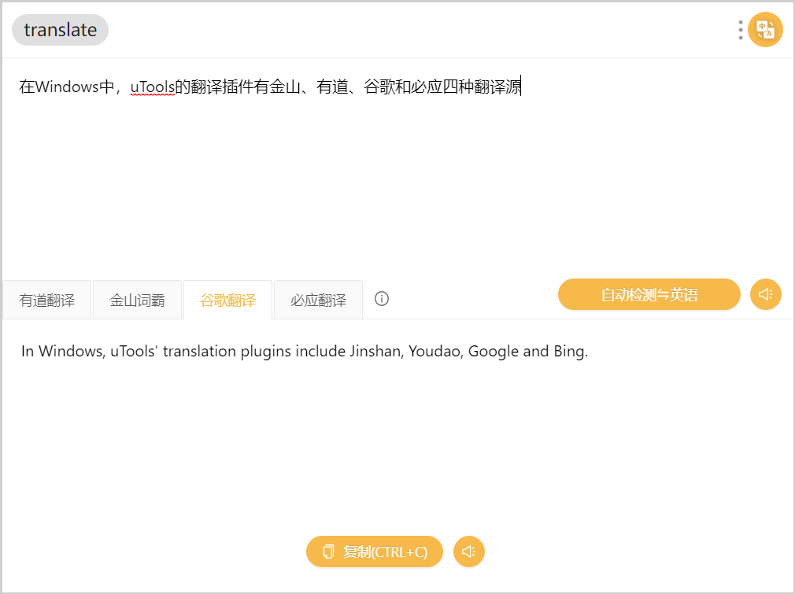

作者：explorer1120
在生活中，我们往往会遇到一些细小琐碎的需求，这些需求的频率往往不高，为了它们专门安装一堆软件，或是打开浏览器都不是最佳选择。
今天要介绍的 uTools，除了能像其他工具箱一样将这些细微需求整合到一起，其插件化的特性更为用户提供了更多可定制的选择。
作为一款免费桌面启动器，uTools 的形态是一个可随时呼出的的输入框 (搜索框)，但和 Listary 等快捷启动器工具不太一样的是，除了可以快速启动应用之外，它更加专注的是「利用插件来扩展功能」。
uTools 最基础的功能是快捷启动器，支持英文、英文驼峰、中文拼音、拼音首字母来打开你的本地程序和文件。总之，只要你还记得一个大概的名字，基本都能找到。
对于 Windows 用户来说，它还支持本地搜索(需要安装插件)。相信大家都知道Windows下的搜索神器——everything，它能让用户迅速从数百 GB 的硬盘中快速搜索到需要的文件。uTools 正是以 Everything 作为内核进行扩展，虽说没有 Everything 的完整功能，但在一些比较基础和常用的操作方面已经毫不逊色。
除了快速启动程序外，uTools 还将生活中可能会用到的一些小功能以插件的形式聚合起来。怎么安装插件？请查看下面的图文教程↓ PS:将鼠标悬停在图片上查看提示
1. 在uTools中的输入框里输入"插件中心"，回车执行
2. 在里面找到想要的插件，点击"下载"图标，这里以批量重命名为例
3. 下载完插件，我们就可以使用了。你可以在"已安装"里找到该插件，并查看触发关键字
颜色小助手
在生活或工作中，我们偶尔会有调色或取色上的需求，但作为非专业设计人士，为了一个颜色而打开设计软件或者安装取色 App 未免太大材小用了些。于是「颜色小助手」就有了用武之地，它由两部分功能组成：颜色管理和颜色拾取。前者包括调色盘和色卡，后者可将拾取到的颜色转换为不同标准的色值。
OCR 文本识别
OCR 也是生活中常用的功能，uTools 提供了简单易用的文字识别工具，不需要选择语言、划定区域，只要通过粘贴、拖入或上传的方式选择一张图片，就会自动将文字识别出来。
目前文本识别插件提供了百度和搜狗两个识别源，经过测试，手写字暂时无法识别，但印刷体识别较精确。
网页快开
无论是生活还是工作，我们都离不开网页搜索，但众多搜索引擎、门户网站让人目眩。借助「网页快开」插件，uTools 可以实现指定网页快速搜索、以图搜图、移动端聚合搜索等功能，一键查看新闻热点、一键在多个无版权图库中搜索图片不再是奢求。
在线翻译
在处理「翻译」问题上，uTools 也毫不逊色。只需在搜索框中输入「翻译」或者直接输入你「想要翻译的内容」，即可使用翻译功能。经实测，有道翻译的功能在准确率上与有道词典接近，足以处理轻量日常使用。
但遗憾的是目前仅支持中英互译。
「小而美」的工具箱
除了丰富的插件，uTools 还有一些小的加分项——
如它支持 macOS、Windows、Linux 多平台，用户在登录后可实现云端数据备份同步服务，方便在不同设备间共享数据，或是预防重装系统造成的数据丢失。
再如它的输入框功能强大，除了直接输入，还支持拖拽、自动粘贴等作为输入源；支持文本、截图、图片、文件、文件夹的自动识别。拖拽一张图片，它就会自动识别是否上传或者压缩，输入英文就会识别是否需要进行翻译……